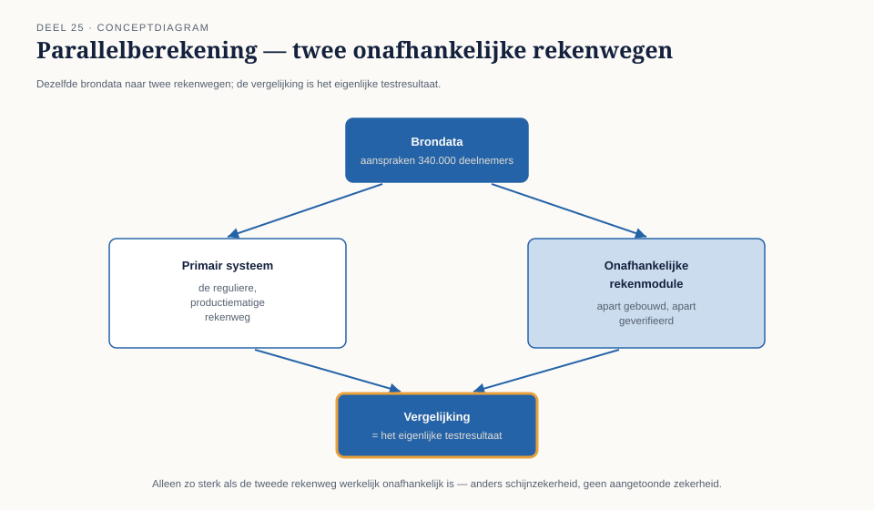

Cursus Testen en Kwaliteitsborging · Niveau 3 (ISTQB) · Deel 25 van 30
Geen tweede waarheid.
Het invaren van bestaande pensioenaanspraken gebeurt, per deelnemer, precies één keer. Er is geen livegang die kan worden teruggedraaid zoals bij WGP 2.0. Dit deel behandelt wat dat voor het testwerk van Iris Verweij betekent: schaduwdraaien, parallelberekening, deelwaarneming, materialiteit — en het orakelprobleem in zijn zwaarste vorm, waar er letterlijk geen tweede waarheid bestaat om tegen te vergelijken.
7secties
±1,5uleestijd + werkboek
4controlevragen
4zekerheidstechnieken
Positionering. Deze cursus is een voorbereiding op de ISTQB-expertcertificeringen van niveau 3 (CT-FT, CT-QDO, CT-AI, CTEL) en uitdrukkelijk geen vervanging van het officiële examenmateriaal van istqb.org. Alle formuleringen, figuren en werkvormen in dit materiaal zijn van Ductus; studeer voor het examen altijd óók de officiële bron.
Niveau 3: 23 Testen in de financiële sector → 24 Testen onder toezicht → 25 Het onomkeerbare testobject (hier) → 26 Testprocesverbetering → 27 Testen van AI-componenten → 28 Kwaliteit in productie en DevOps → 29 De testfunctie als tegenspraak → 30 Masterproef: "De onbewijsbare berekening"
01
Waar dit deel over gaat
⏱ 10 min
Na dit deel kun je:
de bijzondere risico's van een eenmalige, onomkeerbare berekening benoemen en er een testaanpak op afstemmen;
schaduwdraaien en parallelberekening toepassen en hun beperkingen benoemen;
deelwaarnemingen en hercontrole inzetten als aanvullende zekerheidsbronnen;
materialiteit en foutmarge vaststellen en verantwoorden;
het orakelprobleem in zijn existentiële vorm herkennen: wat doe je als er geen tweede waarheid bestaat?
terugdraaibaarheid als ontwerpeis beoordelen en, waar zij ontbreekt, de consequenties voor de teststrategie trekken.
Het invaren van bestaande pensioenaanspraken naar het nieuwe stelsel gebeurt, per deelnemer, precies één keer. Er is geen livegang die kan worden teruggedraaid zoals bij WGP 2.0 (niveau 1) — eenmaal ingevaren, zijn de oude aanspraken juridisch en administratief opgehouden te bestaan. Een fout die na de overgang wordt ontdekt, kan niet worden "hersteld" door simpelweg de oude situatie terug te zetten; herstel betekent een nieuwe, aparte correctieoperatie, met eigen risico's.
Kernzin
Bij een omkeerbaar systeem is de vraag "hebben we genoeg getest?" Bij een onomkeerbaar systeem is de vraag "wat gebeurt er als we het toch mis hebben, en kunnen we dat dragen?"
02
Schaduwdraaien en parallelberekening
⏱ 16 min
Schaduwdraaien
Schaduwdraaien berekent, in de aanloop naar de daadwerkelijke overgang, de invaarberekening op basis van tussentijdse (nog niet definitieve) data, herhaaldelijk, om het proces en de rekenlogica te beproeven vóór het er echt op aankomt. Dit is de invaarversie van een generale repetitie — vergelijkbaar met een soaktest (niveau 2, deel 19) maar dan gericht op procesbetrouwbaarheid in plaats van technische belasting.
Parallelberekening
Parallelberekening laat de daadwerkelijke, definitieve berekening uitvoeren via twee onafhankelijke rekenwegen — bijvoorbeeld het primaire systeem en een apart gebouwde, onafhankelijk geverifieerde rekenmodule — en vergelijkt de uitkomsten. Dit is de meest directe toepassing van "onafhankelijk vastgesteld" (deel 24, §6) op het testobject zelf.

Figuur 25-1 — Parallelberekening: dezelfde brondata naar twee onafhankelijke rekenwegen, met de vergelijking als het eigenlijke testresultaat.
De grens van beide technieken
Schaduwdraaien test het proces, niet de definitieve uitkomst — de data is per definitie nog niet compleet. Parallelberekening test de uitkomst, maar alleen zo goed als de tweede rekenweg werkelijk onafhankelijk is (deel 24, §6.1) — een tweede rekenweg die dezelfde onderliggende aannames deelt, biedt schijnzekerheid, niet aangetoonde zekerheid.
Controlevraag
Uit Werkboek deel 25, Opdracht 25.1 — Schaduwdraaien of parallelberekening?
1Voor elke activiteit: schaduwdraaien, parallelberekening, of geen van beide? a. Drie maanden vóór de overgang wordt de berekening op de meest recente tussentijdse data uitgevoerd, om het proces te beproeven. b. Op de daadwerkelijke overgangsdatum berekent zowel het primaire systeem als een apart gebouwde, onafhankelijke module de uitkomst, en de resultaten worden vergeleken. c. Een steekproef van honderd dossiers wordt handmatig nagerekend.Toon antwoord
a. Schaduwdraaien. b. Parallelberekening. c. Geen van beide — dit is een deelwaarneming (§3).
Uit Werkboek deel 25, Opdracht 25.2 — Beoordeel de onafhankelijkheid
2Een parallelberekening gebruikt een tweede rekenmodule die door hetzelfde ontwikkelteam is gebouwd, op basis van dezelfde technische specificatie als het primaire systeem. Is dit werkelijk onafhankelijk volgens de eis uit deel 24, §6.1? Beargumenteer.Toon antwoord
Nee — zelfde team, zelfde specificatie betekent een hoog risico dat beide modules dezelfde (foutieve) interpretatie van de specificatie delen. Een fout in de gedeelde interpretatie zou door geen van beide worden opgemerkt. Werkelijke onafhankelijkheid vereist een apart team en, idealiter, een aparte, onafhankelijk uitgevoerde interpretatieslag van de oorspronkelijke regelgeving (deel 23).
03
Deelwaarnemingen en hercontrole
⏱ 12 min
Waarom niet alles individueel te controleren is
Bij honderdduizenden aanspraken is 100% individuele, diepgaande controle praktisch onhaalbaar binnen de beschikbare tijd — een andere vorm van de combinatorische onmogelijkheid uit niveau 2, deel 13 (pairwise), nu toegepast op volume in plaats van op condities.
Deelwaarneming als verdedigbare steekproef
Een deelwaarneming is een zorgvuldig opgezette steekproef, groot en gestratificeerd genoeg om met een gespecificeerd betrouwbaarheidsniveau uitspraken te doen over de gehele populatie — niet een willekeurige greep, maar een statistisch verantwoorde selectie die oververtegenwoordiging van hoog-risico-categorieën (bijvoorbeeld deelnemers met complexe dienstverbanden) bewust inbouwt.
Hercontrole
Hercontrole herhaalt een deel van de deelwaarneming met een andere, onafhankelijke methode of persoon, om te bevestigen dat de oorspronkelijke steekproefuitkomst niet zelf een toevalstreffer was. Dit tilt een deelwaarneming van "aannemelijk" naar dichter bij "herhaalbaar vastgesteld" op de ladder (deel 23).
Controlevraag
Uit Werkboek deel 25, Opdracht 25.3 — Ontwerp een deelwaarneming
1Ontwerp een deelwaarnemingsopzet voor de invaarberekening: welke omvang, welke stratificatie (welke categorieën deelnemers oververtegenwoordig je bewust), en welk betrouwbaarheidsniveau streef je na? Voeg een hercontrole-element toe.Toon antwoord
Verdedigbare stratificatie: oververtegenwoordiging van deelnemers met complexe dienstverbanden (meerdere werkgevers, onderbrekingen, deeltijdwisselingen — vergelijk niveau 2, deel 13) omdat "gewone" gevallen minder risico dragen. Hercontrole: een deel van de steekproef (bijvoorbeeld 10%) wordt door een tweede, onafhankelijke persoon met een andere methode herberekend. Het betrouwbaarheidsniveau hoort vooraf te worden vastgesteld, niet achteraf geïnterpreteerd (§4.2).
04
Materialiteit en foutmarge
⏱ 12 min
Het begrip
Materialiteit is de drempel waarboven een afwijking daadwerkelijk relevant wordt voor het oordeel — niet elke afwijking van één cent bij één deelnemer is een reden om de hele overgang te heroverwegen, maar een systematische afwijking die duizenden deelnemers gelijk richting raakt, is dat wél, ongeacht het kleine individuele bedrag.
Waarom dit vooraf moet worden vastgesteld
Materialiteit die pas na het vinden van een afwijking wordt bepaald, is kwetsbaar voor precies dezelfde perverse prikkel als een metric die achteraf wordt geïnterpreteerd (niveau 1, deel 9): de verleiding om de drempel net iets hoger te leggen dan de gevonden afwijking. Materialiteit hoort daarom, samen met de deelwaarnemingsopzet, vooraf te worden vastgesteld en vastgelegd — onderdeel van het testdossier (deel 24, §3.1).
Controlevraag
Uit Werkboek deel 25, Opdracht 25.4 — Materialiteit vaststellen
1Formuleer een materialiteitsdrempel voor de invaarberekening, met een onderbouwing waarom een individueel klein bedrag toch materieel kan zijn als het systematisch is.Toon antwoord
Bijvoorbeeld: "Een individuele afwijking onder €5 wordt niet als materieel beschouwd, tenzij zij een systematisch patroon vertoont dat meer dan 1.000 deelnemers gelijk raakt — in dat geval is de totale impact materieel, ongeacht het kleine individuele bedrag." De onderbouwing moet expliciet het onderscheid individueel-klein versus systematisch-groot benoemen.
05
Het orakelprobleem, existentieel
⏱ 14 min
Terug naar het begin, in zijn zwaarste vorm
Niveau 1, deel 5 introduceerde het orakelprobleem: waartegen vergelijk je een resultaat? Niveau 2, deel 20 liet zien dat AI het probleem verplaatst, niet oplost. Bij de invaarberekening is er, voor het eerst in de hele cursus, een situatie waarin er letterlijk geen bestaande, onafhankelijke tweede waarheid is: er is geen oud stelsel meer om tegen te vergelijken zodra de overgang eenmaal heeft plaatsgevonden, en de nieuwe berekening zelf is precies wat getest moet worden.
Wat resteert als er geen orakel is
Interne consistentie: klopt de uitkomst met zichzelf op meerdere onafhankelijke manieren bekeken (reconciliatie, deel 23; parallelberekening, §2)?
Aansluiting bij bekende referentiepunten: een deelverzameling van eenvoudige, goed te doorgronden gevallen (bijvoorbeeld een deelnemer zonder bijzonderheden) waarvoor de uitkomst met de hand kan worden nagerekend.
Expliciete erkenning van de grens: waar geen van beide bovenstaande mogelijk is, hoort de conclusie op de ladder van zekerheid niet hoger te staan dan wat werkelijk is vastgesteld — ook als dat "aannemelijk" is in plaats van het gewenste "aangetoond".
Kernzin
Waar geen orakel bestaat, is de eerlijkste conclusie soms: "dit kunnen we niet aantonen, wel aannemelijk maken op de volgende gronden." Die eerlijkheid is geen falen van het testwerk — het is het testwerk dat zijn taak het best vervult.
06
Terugdraaibaarheid als ontwerpeis
⏱ 10 min
Een vraag die vóór het testen al gesteld had moeten zijn
Niveau 1 (WGP 2.0) had het voordeel dat een livegang kon worden teruggedraaid — een technisch ontwerpkenmerk dat zelf een vorm van risicobeheersing was, ook al werd het toen niet expliciet zo benoemd. Bij de invaarberekening is die vraag scherper: is er, ergens in het ontwerp, een mogelijkheid om een fout te herstellen zonder de hele overgang te heropenen?
Wat dit voor testwerk betekent
Waar terugdraaibaarheid ontstaat (bijvoorbeeld een correctiemechanisme voor individuele gevallen, ontworpen vóórdat de overgang plaatsvindt), verschuift een deel van het risico van "moet vooraf perfect zijn" naar "moet aantoonbaar herstelbaar zijn" — een andere, soms haalbaardere teststrategie. Waar terugdraaibaarheid volledig ontbreekt (zoals bij het collectieve deel van de overgang), rust de volle zwaarte van §2 tot en met §5 van dit deel op het testwerk vooraf, zonder vangnet achteraf.
07
Terug naar de casus
⏱ 8 min
Voor Iris betekent dit deel dat "genoeg getest" nooit de juiste vraag was voor de invaarberekening. Schaduwdraaien, parallelberekening, deelwaarneming en materialiteit zijn stuk voor stuk manieren om, bij afwezigheid van een orakel, toch een verdedigbare, expliciete uitspraak te doen — en waar terugdraaibaarheid ontbreekt, weet zij nu waarom die uitspraak vooraf moet standhouden.
Huiswerk. Beschrijf een situatie (uit de casus of eigen werk) waarin geen tweede, onafhankelijke waarheid beschikbaar is om een resultaat tegen te verifiëren. Formuleer wat je in plaats daarvan zou doen en op welke trede van de ladder van zekerheid je conclusie dan hoort te landen. Neem mee naar deel 26.
Vooruit naar deel 26. Dit deel ging over het testobject zelf. Deel 26 stapt een niveau hoger: hoe je het testproces dat dit alles moet dragen, zelf beoordeelt en verbetert — te beginnen met een assessment dat niemand wilde.
Verder naar deel 26
Dit deel ging over het testobject zelf. Deel 26 stapt een niveau hoger: hoe je het testproces dat dit alles moet dragen, zelf beoordeelt en verbetert — te beginnen met een assessment dat niemand wilde.